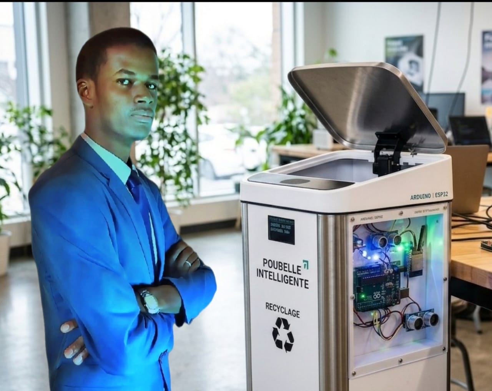

ACTIVE_DEPLOYMENT
01_
SMART_BIN_v1.0
Système de gestion intelligente des déchets basé sur l'IoT. Utilisation d'un microcontrôleur ESP32 pour la détection de niveau en temps réel, l'automatisation d'ouverture et la transmission de données.